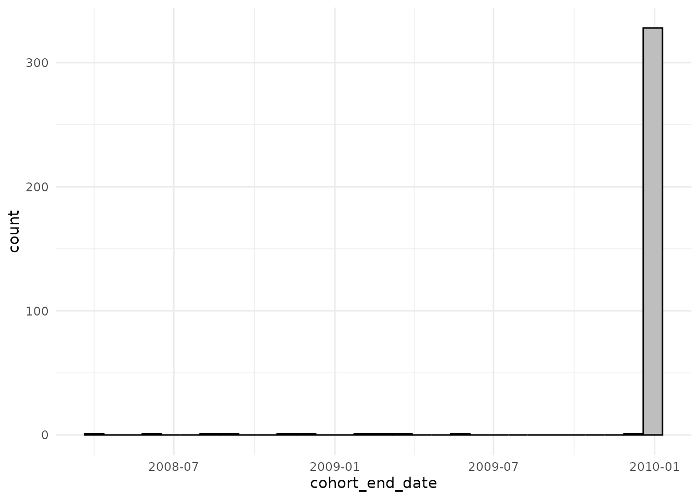
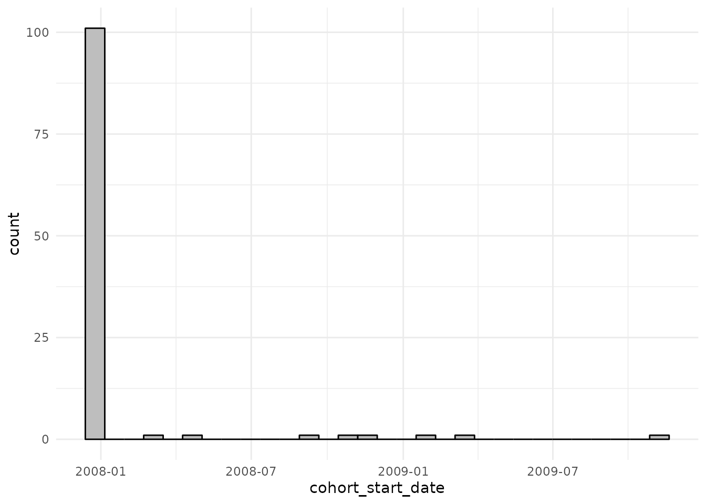
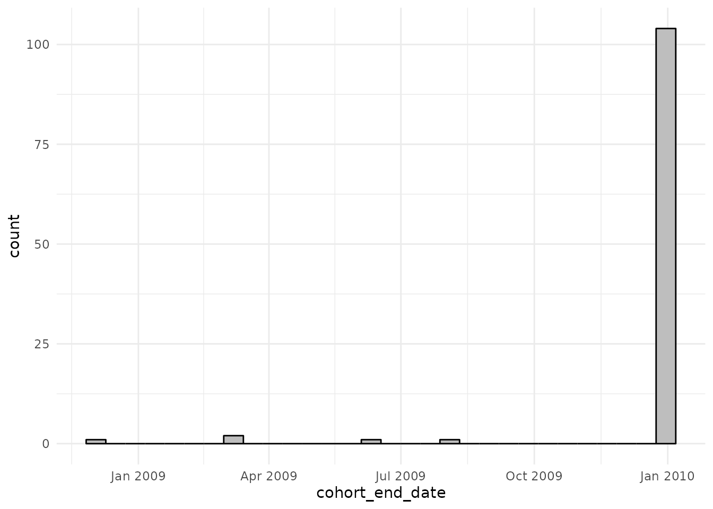
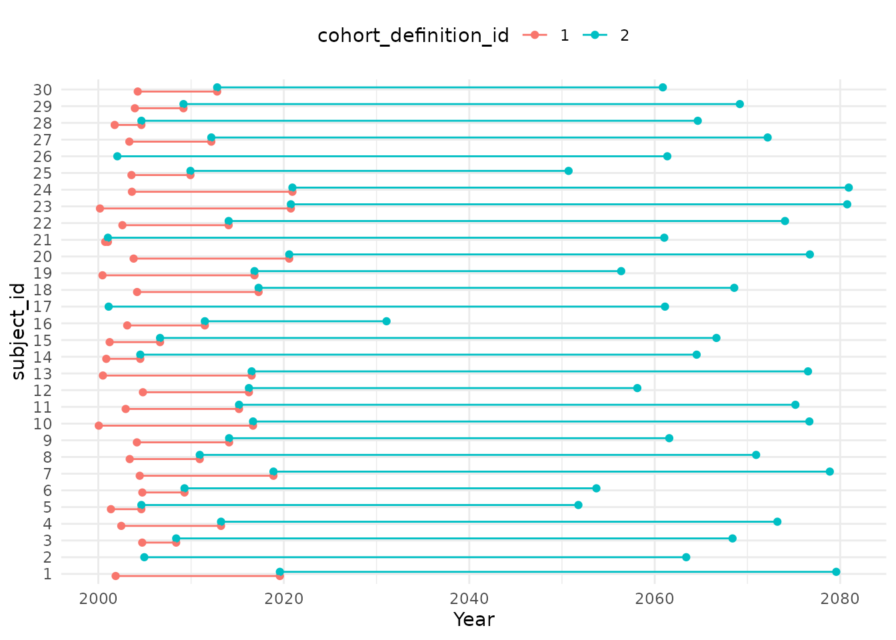
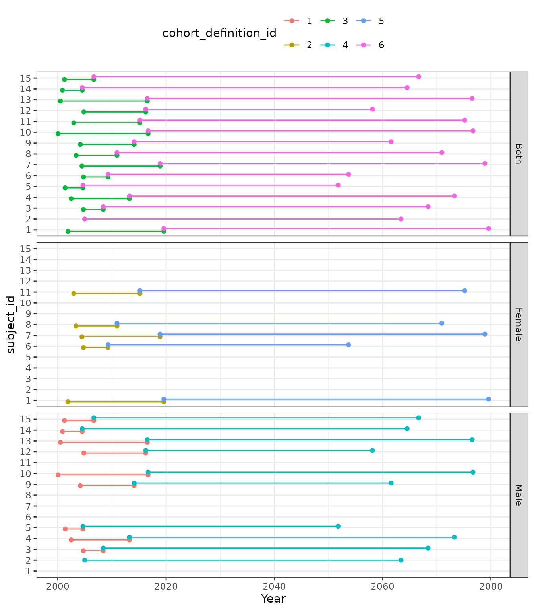
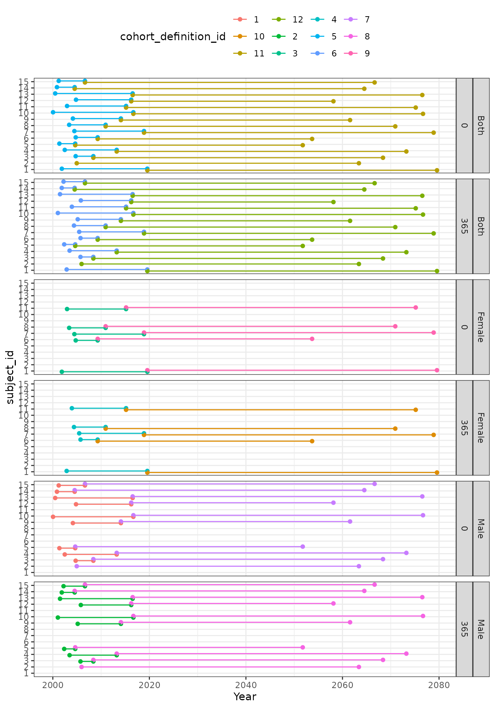

Creating denominator cohorts
a02_Creating_denominator_populations.RmdIntroduction
Calculating incidence or prevalence requires first identifying an
appropriate denominator population. To find such a denominator
population (or multiple denominator populations) we can use the
generateDenominatorCohortSet() function. This function will
identify the time that people in the database satisfy a set of criteria
related to the study period and individuals´ age, sex, and amount of
prior observed history.
When using generateDenominatorCohortSet(), and in the
absence of a strata cohort (see below), individuals will enter a
denominator population on the respective date of the latest of the
following:
- Study start date
- Date at which they have sufficient prior history (if there is no
requirement for prior history, this date will coincide with the date at
which their observation period starts)
- Date at which they reach a minimum age
They will then exit on the respective date of the earliest of the following:
- Study end date
- Date at which their observation period ends
- The last day in which they have the maximum age
Let´s go through a few examples to make this logic a little more concrete.
No specific requirements
The simplest case is that no study start and end dates are specified, no prior history requirement is imposed, nor any age or sex criteria. In this case individuals will enter the denominator population once they have entered the database (start of observation period) and will leave when they exit the database (end of observation period). Note that in some databases a person can have multiple observation periods, in which case their contribution of person time would look like the the last person below.

Specified study period
If we specify a study start and end date then only observation time during this period will be included.

Specified study period and prior history requirement
If we also add some requirement of prior history then somebody will only contribute time at risk once this is reached.

Specified study period, prior history requirement, and age and sex criteria
Lastly we can also impose age and sex criteria, and now individuals will only contribute time when they also satisfy these criteria. Not shown in the below figure is a person´s sex, but we could also stratify a denominator population by this as well.

Using generateDenominatorCohortSet()
generateDenominatorCohortSet() is the function we use to
identify a set of denominator populations. To demonstrate its use, let´s
load the IncidencePrevalence package (along with a couple of packages to
help for subsequent plots) and generate 500 example patients using the
mockIncidencePrevalenceRef() function.
library(IncidencePrevalence)
library(ggplot2)
library(tidyr)
cdm <- mockIncidencePrevalenceRef(sampleSize = 500)No specific requirements
We can get a denominator population without including any particular requirements like so
cdm$denominator <- generateDenominatorCohortSet(
cdm = cdm,
startDate = NULL,
endDate = NULL,
ageGroup = list(c(0, 150)),
sex = "Both",
daysPriorHistory = 0
)
cdm$denominator
#> # Source: table<dbplyr_008> [?? x 4]
#> # Database: DuckDB 0.6.2-dev1166 [unknown@Linux 5.15.0-1031-azure:R 4.2.2/:memory:]
#> cohort_definition_id subject_id cohort_start_date cohort_end_date
#> <int> <chr> <date> <date>
#> 1 1 2 2018-11-27 2020-07-15
#> 2 1 4 2016-02-24 2016-07-14
#> 3 1 6 2006-04-29 2007-03-15
#> 4 1 9 2006-11-14 2008-09-29
#> 5 1 10 2009-12-16 2011-11-26
#> 6 1 12 2015-05-09 2016-03-25
#> 7 1 14 2013-07-23 2014-07-01
#> 8 1 15 2005-06-30 2007-05-16
#> 9 1 17 2011-06-19 2012-03-16
#> 10 1 19 2013-09-21 2014-12-02
#> # … with more rows
cdm$denominator %>%
filter(subject_id %in% c("1", "2", "3", "4", "5"))
#> # Source: SQL [5 x 4]
#> # Database: DuckDB 0.6.2-dev1166 [unknown@Linux 5.15.0-1031-azure:R 4.2.2/:memory:]
#> cohort_definition_id subject_id cohort_start_date cohort_end_date
#> <int> <chr> <date> <date>
#> 1 1 2 2018-11-27 2020-07-15
#> 2 1 4 2016-02-24 2016-07-14
#> 3 1 3 2008-04-30 2008-09-19
#> 4 1 5 2019-03-01 2019-03-18
#> 5 1 1 2008-10-12 2010-01-09Let´s have a look at the included time of the first five patients

We can also plot a histogram of start and end dates of the 500 simulated patients
cdm$denominator %>%
collect() %>%
ggplot() +
theme_minimal() +
geom_histogram(aes(cohort_start_date),
colour = "black", fill = "grey"
)
cdm$denominator %>%
collect() %>%
ggplot() +
theme_minimal() +
geom_histogram(aes(cohort_end_date),
colour = "black", fill = "grey"
)
Specified study period
We can get specify a study period like so
cdm$denominator <- generateDenominatorCohortSet(
cdm = cdm,
startDate = as.Date("2008-01-01"),
endDate = as.Date("2010-01-01"),
ageGroup = list(c(0, 150)),
sex = "Both",
daysPriorHistory = 0
)
cdm$denominator
#> # Source: table<dbplyr_016> [?? x 4]
#> # Database: DuckDB 0.6.2-dev1166 [unknown@Linux 5.15.0-1031-azure:R 4.2.2/:memory:]
#> cohort_definition_id subject_id cohort_start_date cohort_end_date
#> <int> <chr> <date> <date>
#> 1 1 9 2008-01-01 2008-09-29
#> 2 1 10 2009-12-16 2010-01-01
#> 3 1 20 2008-01-01 2008-05-28
#> 4 1 22 2008-10-23 2008-12-12
#> 5 1 24 2008-01-01 2008-06-21
#> 6 1 35 2008-02-29 2008-08-09
#> 7 1 43 2008-08-01 2009-01-20
#> 8 1 48 2008-01-01 2009-02-19
#> 9 1 54 2008-01-01 2009-04-03
#> 10 1 76 2008-01-01 2008-01-16
#> # … with more rows
cohortCount(cdm$denominator)
#> # A tibble: 1 × 2
#> cohort_definition_id n
#> <int> <dbl>
#> 1 1 106
cdm$denominator %>%
filter(subject_id %in% c("1", "2", "3", "4", "5"))
#> # Source: SQL [2 x 4]
#> # Database: DuckDB 0.6.2-dev1166 [unknown@Linux 5.15.0-1031-azure:R 4.2.2/:memory:]
#> cohort_definition_id subject_id cohort_start_date cohort_end_date
#> <int> <chr> <date> <date>
#> 1 1 3 2008-04-30 2008-09-19
#> 2 1 1 2008-10-12 2010-01-01Now we can see the person “2”, “4” and “5” haven´t been included as they don´t have any observation time during the study period. Indeed, we´re now including 106 of the original 500 simulated patients.
cdm$denominator %>%
filter(subject_id %in% c("1", "2", "3", "4", "5")) %>%
collect() %>%
pivot_longer(cols = c(
"cohort_start_date",
"cohort_end_date"
)) %>%
ggplot() +
geom_point(aes(x = value, y = subject_id)) +
geom_line(aes(x = value, y = subject_id)) +
theme_minimal() +
xlab("Year")
We can also plot a histogram of start and end dates and we can see that now most people enter at the start of the study period and leave at the end.
cdm$denominator %>%
collect() %>%
ggplot() +
theme_minimal() +
geom_histogram(aes(cohort_start_date),
colour = "black", fill = "grey"
)
cdm$denominator %>%
collect() %>%
ggplot() +
theme_minimal() +
geom_histogram(aes(cohort_end_date),
colour = "black", fill = "grey"
)
Specified study period and prior history requirement
We can add some requirement of prior history
cdm$denominator <- generateDenominatorCohortSet(
cdm = cdm,
startDate = as.Date("2008-01-01"),
endDate = as.Date("2010-01-01"),
ageGroup = list(c(0, 150)),
sex = "Both",
daysPriorHistory = 365
)
cdm$denominator
#> # Source: table<dbplyr_024> [?? x 4]
#> # Database: DuckDB 0.6.2-dev1166 [unknown@Linux 5.15.0-1031-azure:R 4.2.2/:memory:]
#> cohort_definition_id subject_id cohort_start_date cohort_end_date
#> <int> <chr> <date> <date>
#> 1 1 9 2008-01-01 2008-09-29
#> 2 1 20 2008-01-01 2008-05-28
#> 3 1 48 2008-02-28 2009-02-19
#> 4 1 54 2008-01-01 2009-04-03
#> 5 1 76 2008-01-01 2008-01-16
#> 6 1 78 2008-04-20 2008-06-02
#> 7 1 87 2009-11-07 2010-01-01
#> 8 1 99 2008-06-08 2008-12-16
#> 9 1 103 2009-06-23 2009-07-07
#> 10 1 105 2008-01-01 2008-05-16
#> # … with more rows
cohortCount(cdm$denominator)
#> # A tibble: 1 × 2
#> cohort_definition_id n
#> <int> <dbl>
#> 1 1 57
cdm$denominator %>%
filter(subject_id %in% c("1", "2", "3", "4", "5"))
#> # Source: SQL [1 x 4]
#> # Database: DuckDB 0.6.2-dev1166 [unknown@Linux 5.15.0-1031-azure:R 4.2.2/:memory:]
#> cohort_definition_id subject_id cohort_start_date cohort_end_date
#> <int> <chr> <date> <date>
#> 1 1 1 2009-10-12 2010-01-01Now we only include patient “1” of the original first five and we´re now including 57 of the original 500 simulated patients.
cdm$denominator %>%
filter(subject_id %in% c("1", "2", "3", "4", "5")) %>%
collect() %>%
pivot_longer(cols = c(
"cohort_start_date",
"cohort_end_date"
)) %>%
ggplot() +
geom_point(aes(x = value, y = subject_id)) +
geom_line(aes(x = value, y = subject_id)) +
theme_minimal() +
xlab("Year")
With the histograms of start and end dates now looking like
cdm$denominator %>%
collect() %>%
ggplot() +
theme_minimal() +
geom_histogram(aes(cohort_start_date),
colour = "black", fill = "grey"
)
cdm$denominator %>%
collect() %>%
ggplot() +
theme_minimal() +
geom_histogram(aes(cohort_end_date),
colour = "black", fill = "grey"
)
Specified study period, prior history requirement, and age and sex criteria
In addition to all the above we could also add some requirements around age and sex. One thing to note is that the age upper limit will include time from a person up to the day before their reach the age upper limit + 1 year. For instance, when the upper limit is 65, that means we will include time from a person up to and including the day before their 66th birthday.
cdm$denominator <- generateDenominatorCohortSet(
cdm = cdm,
startDate = as.Date("2008-01-01"),
endDate = as.Date("2010-01-01"),
ageGroup = list(c(18, 65)),
sex = "Female",
daysPriorHistory = 365
)
cdm$denominator %>%
glimpse()
#> Rows: ??
#> Columns: 4
#> Database: DuckDB 0.6.2-dev1166 [unknown@Linux 5.15.0-1031-azure:R 4.2.2/:memory:]
#> $ cohort_definition_id <int> 1, 1, 1, 1, 1, 1, 1, 1, 1, 1, 1, 1, 1, 1, 1, 1, 1…
#> $ subject_id <chr> "20", "54", "78", "99", "168", "176", "182", "231…
#> $ cohort_start_date <date> 2008-01-01, 2008-01-01, 2008-04-20, 2008-06-08, …
#> $ cohort_end_date <date> 2008-05-28, 2009-03-05, 2008-06-02, 2008-12-16, …
cohortCount(cdm$denominator)
#> # A tibble: 1 × 2
#> cohort_definition_id n
#> <int> <dbl>
#> 1 1 20
cdm$denominator %>%
filter(subject_id %in% c("1", "2", "3", "4", "5"))
#> # Source: SQL [0 x 4]
#> # Database: DuckDB 0.6.2-dev1166 [unknown@Linux 5.15.0-1031-azure:R 4.2.2/:memory:]
#> # … with 4 variables: cohort_definition_id <int>, subject_id <chr>,
#> # cohort_start_date <date>, cohort_end_date <date>Now none of the original first five are included and we´re including 20 of the original 500 simulated patients.
The histograms of start and end dates now looking like
cdm$denominator %>%
collect() %>%
ggplot() +
theme_minimal() +
geom_histogram(aes(cohort_start_date),
colour = "black", fill = "grey"
)
cdm$denominator %>%
collect() %>%
ggplot() +
theme_minimal() +
geom_histogram(aes(cohort_end_date),
colour = "black", fill = "grey"
)
Multiple options to return multiple denominator populations
More than one age, sex and prior history requirements can be specified at the same time. First, we can take a look at having two age groups. We can see below that those individuals who have their 41st birthday during the study period will go from the first cohort (age_group: 0;40) to the second (age_group: 41;100) on this day.
cdm$denominator <- generateDenominatorCohortSet(
cdm = cdm,
startDate = as.Date("2008-01-01"),
endDate = as.Date("2010-01-01"),
ageGroup = list(
c(0, 40),
c(41, 100)
),
sex = "Both",
daysPriorHistory = 0
)
dpop <- cdm$denominator %>%
collect() %>%
left_join(settings(cdm$denominator))
dpop %>%
glimpse()
#> Rows: 106
#> Columns: 11
#> $ cohort_definition_id <int> 1, 1, 1, 1, 1, 1, 1, 1, 1, 1, 1, 1, 1, 1, …
#> $ subject_id <chr> "24", "43", "48", "76", "78", "79", "87", …
#> $ cohort_start_date <date> 2008-01-01, 2008-08-01, 2008-01-01, 2008-…
#> $ cohort_end_date <date> 2008-06-21, 2009-01-20, 2009-02-19, 2008-…
#> $ age_group <chr> "0;40", "0;40", "0;40", "0;40", "0;40", "0…
#> $ sex <chr> "Both", "Both", "Both", "Both", "Both", "B…
#> $ days_prior_history <dbl> 0, 0, 0, 0, 0, 0, 0, 0, 0, 0, 0, 0, 0, 0, …
#> $ start_date <date> 2008-01-01, 2008-01-01, 2008-01-01, 2008-…
#> $ end_date <date> 2010-01-01, 2010-01-01, 2010-01-01, 2010-…
#> $ strata_cohort_definition_id <lgl> NA, NA, NA, NA, NA, NA, NA, NA, NA, NA, NA…
#> $ strata_cohort_name <lgl> NA, NA, NA, NA, NA, NA, NA, NA, NA, NA, NA…
dpop %>%
group_by(cohort_definition_id, age_group) %>%
tally()
#> # A tibble: 2 × 3
#> # Groups: cohort_definition_id [2]
#> cohort_definition_id age_group n
#> <int> <chr> <int>
#> 1 1 0;40 50
#> 2 2 41;100 56
dpop %>%
filter(subject_id %in% c("1", "3", "57", "353", "393", "496")) %>%
collect() %>%
pivot_longer(cols = c(
"cohort_start_date",
"cohort_end_date"
)) %>%
mutate(cohort_definition_id = as.character(cohort_definition_id)) %>%
ggplot(aes(x = subject_id, y = value, colour = cohort_definition_id)) +
geom_point(position = position_dodge(width = 0.5)) +
geom_line(position = position_dodge(width = 0.5)) +
theme_minimal() +
theme(legend.position = "top") +
ylab("Year") +
coord_flip()
We can then also
cdm$denominator <- generateDenominatorCohortSet(
cdm = cdm,
startDate = as.Date("2008-01-01"),
endDate = as.Date("2010-01-01"),
ageGroup = list(
c(0, 40),
c(41, 100)
),
sex = c("Male", "Female", "Both"),
daysPriorHistory = 0
)
dpop <- cdm$denominator %>%
collect() %>%
left_join(settings(cdm$denominator))
dpop %>% glimpse()
#> Rows: 212
#> Columns: 11
#> $ cohort_definition_id <int> 1, 1, 1, 1, 1, 1, 1, 1, 1, 1, 1, 1, 1, 1, …
#> $ subject_id <chr> "48", "87", "194", "203", "219", "303", "3…
#> $ cohort_start_date <date> 2008-01-01, 2008-11-07, 2008-01-01, 2008-…
#> $ cohort_end_date <date> 2009-02-19, 2010-01-01, 2010-01-01, 2009-…
#> $ age_group <chr> "0;40", "0;40", "0;40", "0;40", "0;40", "0…
#> $ sex <chr> "Male", "Male", "Male", "Male", "Male", "M…
#> $ days_prior_history <dbl> 0, 0, 0, 0, 0, 0, 0, 0, 0, 0, 0, 0, 0, 0, …
#> $ start_date <date> 2008-01-01, 2008-01-01, 2008-01-01, 2008-…
#> $ end_date <date> 2010-01-01, 2010-01-01, 2010-01-01, 2010-…
#> $ strata_cohort_definition_id <lgl> NA, NA, NA, NA, NA, NA, NA, NA, NA, NA, NA…
#> $ strata_cohort_name <lgl> NA, NA, NA, NA, NA, NA, NA, NA, NA, NA, NA…
dpop %>%
group_by(cohort_definition_id, age_group, sex) %>%
tally()
#> # A tibble: 6 × 4
#> # Groups: cohort_definition_id, age_group [6]
#> cohort_definition_id age_group sex n
#> <int> <chr> <chr> <int>
#> 1 1 0;40 Male 19
#> 2 2 0;40 Female 31
#> 3 3 0;40 Both 50
#> 4 4 41;100 Male 31
#> 5 5 41;100 Female 25
#> 6 6 41;100 Both 56
dpop %>%
filter(subject_id %in% c("1", "3", "57", "353", "393", "496")) %>%
pivot_longer(cols = c(
"cohort_start_date",
"cohort_end_date"
)) %>%
mutate(cohort_definition_id = as.character(cohort_definition_id)) %>%
ggplot(aes(x = subject_id, y = value, colour = cohort_definition_id)) +
facet_grid(sex ~ ., space = "free_y") +
geom_point(position = position_dodge(width = 0.5)) +
geom_line(position = position_dodge(width = 0.5)) +
theme_bw() +
theme(legend.position = "top") +
ylab("Year") +
coord_flip()
And then also specifying multiple prior history requirements
cdm$denominator <- generateDenominatorCohortSet(
cdm = cdm,
startDate = as.Date("2008-01-01"),
endDate = as.Date("2010-01-01"),
ageGroup = list(
c(0, 40),
c(41, 100)
),
sex = c("Male", "Female", "Both"),
daysPriorHistory = c(0, 365)
)
dpop <- cdm$denominator %>%
collect() %>%
left_join(settings(cdm$denominator))
dpop %>% glimpse()
#> Rows: 326
#> Columns: 11
#> $ cohort_definition_id <int> 1, 1, 1, 1, 1, 1, 1, 1, 1, 1, 1, 1, 1, 1, …
#> $ subject_id <chr> "48", "87", "194", "203", "219", "303", "3…
#> $ cohort_start_date <date> 2008-01-01, 2008-11-07, 2008-01-01, 2008-…
#> $ cohort_end_date <date> 2009-02-19, 2010-01-01, 2010-01-01, 2009-…
#> $ age_group <chr> "0;40", "0;40", "0;40", "0;40", "0;40", "0…
#> $ sex <chr> "Male", "Male", "Male", "Male", "Male", "M…
#> $ days_prior_history <dbl> 0, 0, 0, 0, 0, 0, 0, 0, 0, 0, 0, 0, 0, 0, …
#> $ start_date <date> 2008-01-01, 2008-01-01, 2008-01-01, 2008-…
#> $ end_date <date> 2010-01-01, 2010-01-01, 2010-01-01, 2010-…
#> $ strata_cohort_definition_id <lgl> NA, NA, NA, NA, NA, NA, NA, NA, NA, NA, NA…
#> $ strata_cohort_name <lgl> NA, NA, NA, NA, NA, NA, NA, NA, NA, NA, NA…
dpop %>%
group_by(cohort_definition_id, age_group, sex, days_prior_history) %>%
tally()
#> # A tibble: 12 × 5
#> # Groups: cohort_definition_id, age_group, sex [12]
#> cohort_definition_id age_group sex days_prior_history n
#> <int> <chr> <chr> <dbl> <int>
#> 1 1 0;40 Male 0 19
#> 2 2 0;40 Male 365 14
#> 3 3 0;40 Female 0 31
#> 4 4 0;40 Female 365 16
#> 5 5 0;40 Both 0 50
#> 6 6 0;40 Both 365 30
#> 7 7 41;100 Male 0 31
#> 8 8 41;100 Male 365 13
#> 9 9 41;100 Female 0 25
#> 10 10 41;100 Female 365 14
#> 11 11 41;100 Both 0 56
#> 12 12 41;100 Both 365 27
dpop %>%
filter(subject_id %in% c("1", "3", "57", "353", "393", "496")) %>%
pivot_longer(cols = c(
"cohort_start_date",
"cohort_end_date"
)) %>%
mutate(cohort_definition_id = as.character(cohort_definition_id)) %>%
ggplot(aes(x = subject_id, y = value, colour = cohort_definition_id)) +
facet_grid(sex + days_prior_history ~ ., space = "free_y") +
geom_point(position = position_dodge(width = 0.5)) +
geom_line(position = position_dodge(width = 0.5)) +
theme_bw() +
theme(legend.position = "top") +
ylab("Year") +
coord_flip()
Output
generateDenominatorCohortSet() will generate a table
with the denominator population, which includes the information on all
the individuals who fulfill the given criteria at any point during the
study period. It also includes information on the specific start and end
dates in which individuals contributed to the denominator population
(cohort_start_date and cohort_end_date). Each patient is recorded in a
different row. For those databases that allow individuals to have
multiple non-overlapping observation periods, one row for each patient
and observation period is considered.
Considering the following example, we can see:
cdm$denominator <- generateDenominatorCohortSet(
cdm = cdm,
startDate = as.Date("2008-01-01"),
endDate = as.Date("2010-01-01"),
ageGroup = list(
c(0, 18),
c(19, 100)
),
sex = c("Male", "Female"),
daysPriorHistory = c(0, 365)
)
head(cdm$denominator, 8)
#> # Source: SQL [8 x 4]
#> # Database: DuckDB 0.6.2-dev1166 [unknown@Linux 5.15.0-1031-azure:R 4.2.2/:memory:]
#> cohort_definition_id subject_id cohort_start_date cohort_end_date
#> <int> <chr> <date> <date>
#> 1 1 203 2008-01-01 2009-03-28
#> 2 1 303 2008-07-15 2009-05-14
#> 3 1 409 2008-01-01 2008-07-28
#> 4 1 462 2008-01-01 2008-02-20
#> 5 1 3 2008-04-30 2008-09-19
#> 6 2 203 2008-01-01 2009-03-28
#> 7 2 409 2008-06-16 2008-07-28
#> 8 2 462 2008-01-01 2008-02-20The output table will have several attributes. With
settings() we can see the options used when defining the
set of denominator populations. More than one age, sex and prior history
requirements can be specified at the same time and each combination of
these variables will result in a different cohort, each of which has a
corresponding cohort_definition_id. In the above example, we identified
8 different cohorts:
settings(cdm$denominator)
#> # A tibble: 8 × 8
#> cohort_definitio…¹ age_g…² sex days_…³ start_date end_date strat…⁴ strat…⁵
#> <int> <chr> <chr> <dbl> <date> <date> <lgl> <lgl>
#> 1 1 0;18 Male 0 2008-01-01 2010-01-01 NA NA
#> 2 2 0;18 Male 365 2008-01-01 2010-01-01 NA NA
#> 3 3 0;18 Fema… 0 2008-01-01 2010-01-01 NA NA
#> 4 4 0;18 Fema… 365 2008-01-01 2010-01-01 NA NA
#> 5 5 19;100 Male 0 2008-01-01 2010-01-01 NA NA
#> 6 6 19;100 Male 365 2008-01-01 2010-01-01 NA NA
#> 7 7 19;100 Fema… 0 2008-01-01 2010-01-01 NA NA
#> 8 8 19;100 Fema… 365 2008-01-01 2010-01-01 NA NA
#> # … with abbreviated variable names ¹cohort_definition_id, ²age_group,
#> # ³days_prior_history, ⁴strata_cohort_definition_id, ⁵strata_cohort_nameWith cohortCount() we can see the number of individuals
who entered each study cohort
cohortCount(cdm$denominator)
#> # A tibble: 8 × 2
#> cohort_definition_id n
#> <int> <dbl>
#> 1 1 5
#> 2 2 3
#> 3 3 13
#> 4 4 7
#> 5 5 45
#> 6 6 24
#> 7 7 43
#> 8 8 23With attrition() we can see the number of individuals in
the database who were excluded from entering a given denominator
population along with the reason (such as missing crucial information or
not satisfying the sex or age criteria required, among others):
attrition(cdm$denominator)
#> # A tibble: 72 × 5
#> current_n reason exclu…¹ cohor…² step
#> <dbl> <glue> <dbl> <int> <chr>
#> 1 500 Starting population NA 1 Gene…
#> 2 500 Missing year of birth 0 1 Gene…
#> 3 500 Missing sex 0 1 Gene…
#> 4 500 Cannot satisfy age criteria during the study… 0 1 Gene…
#> 5 106 No observation time available during study p… 394 1 Gene…
#> 6 106 Doesn't satisfy age criteria during the stud… 0 1 Gene…
#> 7 106 Prior history requirement not fulfilled duri… 0 1 Gene…
#> 8 50 Not Male 56 1 Gene…
#> 9 5 No observation time available after applying… 45 1 Gene…
#> 10 500 Starting population NA 2 Gene…
#> # … with 62 more rows, and abbreviated variable names ¹excluded,
#> # ²cohort_definition_idUsing generateDenominatorCohortSet() with a cohort
The generateDenominatorCohortSet() function can also be
run for a subset of the population with a particular characteristic
recorded in our database, which could be time-invariant
(e.g. ethnicity), or time-varying (e.g. taking a certain medication).
When using generateDenominatorCohortSet(), a stratifying
cohort must be in the format of an OMOP CDM cohort.
To provide an example its use, let´s generate 5 example patients.
personTable <- tibble(
person_id = c("1", "2", "3", "4", "5"),
gender_concept_id = c(rep("8507", 2), rep("8532", 3)),
year_of_birth = 2000,
month_of_birth = 06,
day_of_birth = 01
)
observationPeriodTable <- tibble(
observation_period_id = "1",
person_id = c("1", "2", "3", "4", "5"),
observation_period_start_date = c(
as.Date("2010-12-19"),
as.Date("2005-04-01"),
as.Date("2009-04-10"),
as.Date("2010-08-20"),
as.Date("2010-01-01")
),
observation_period_end_date = c(
as.Date("2011-06-19"),
as.Date("2005-11-29"),
as.Date("2016-01-02"),
as.Date("2011-12-11"),
as.Date("2015-06-01")
)
)Here we generate a simulated strata table with 5 individuals and 3 different cohort stratas to illustrate the following examples.
conditionX <- tibble(
cohort_definition_id = c(rep("1", 3), rep("2", 3), rep("3", 5)),
subject_id = c("1", "2", "4", "3", "5", "2", "3", "3", "5", "5", "2"),
cohort_start_date = c(
as.Date("2010-12-19"),
as.Date("2005-04-01"),
as.Date("2010-08-20"),
as.Date("2012-01-01"),
as.Date("2010-06-01"),
as.Date("2005-08-20"),
as.Date("2012-01-01"),
as.Date("2015-06-01"),
as.Date("2014-10-01"),
as.Date("2010-06-01"),
as.Date("2005-08-20")
),
cohort_end_date = c(
as.Date("2011-06-19"),
as.Date("2005-11-29"),
as.Date("2011-12-11"),
as.Date("2013-01-01"),
as.Date("2012-03-01"),
as.Date("2005-11-29"),
as.Date("2013-01-01"),
as.Date("2015-12-31"),
as.Date("2015-04-01"),
as.Date("2010-06-01"),
as.Date("2005-08-20")
)
)
# mock database
cdm <- mockIncidencePrevalenceRef(
personTable = personTable,
observationPeriodTable = observationPeriodTable,
strataTable = conditionX
)We can get a denominator population without including any particular subset like so
cdm$denominator <- generateDenominatorCohortSet(
cdm = cdm
)
cdm$denominator
#> # Source: table<dbplyr_074> [5 x 4]
#> # Database: DuckDB 0.6.2-dev1166 [unknown@Linux 5.15.0-1031-azure:R 4.2.2/:memory:]
#> cohort_definition_id subject_id cohort_start_date cohort_end_date
#> <int> <chr> <date> <date>
#> 1 1 2 2005-04-01 2005-11-29
#> 2 1 3 2009-04-10 2016-01-02
#> 3 1 4 2010-08-20 2011-12-11
#> 4 1 5 2010-01-01 2015-06-01
#> 5 1 1 2010-12-19 2011-06-19As we did not specify any study start and end date, the cohort start and end date of our 5 patients correspond to the same registered as observation period.
observationPeriodTable
#> # A tibble: 5 × 4
#> observation_period_id person_id observation_period_start_date observation_pe…¹
#> <chr> <chr> <date> <date>
#> 1 1 1 2010-12-19 2011-06-19
#> 2 1 2 2005-04-01 2005-11-29
#> 3 1 3 2009-04-10 2016-01-02
#> 4 1 4 2010-08-20 2011-12-11
#> 5 1 5 2010-01-01 2015-06-01
#> # … with abbreviated variable name ¹observation_period_end_dateLet’s suppose we want to subset our population based on a non-time varying characteristic such as ethnicity, which corresponds to strataCohortId “1” in our simulated strata table.
cdm$denominator <- generateDenominatorCohortSet(
cdm = cdm,
strataTable = "strata",
strataCohortId = 1,
strataCohortName = "strata_cohort_1"
)
cdm$denominator
#> # Source: table<dbplyr_084> [3 x 4]
#> # Database: DuckDB 0.6.2-dev1166 [unknown@Linux 5.15.0-1031-azure:R 4.2.2/:memory:]
#> cohort_definition_id subject_id cohort_start_date cohort_end_date
#> <int> <chr> <date> <date>
#> 1 1 2 2005-04-01 2005-11-29
#> 2 1 4 2010-08-20 2011-12-11
#> 3 1 1 2010-12-19 2011-06-19We have obtained the 3 patients with the particular ethnicity we were interested in. Moreover, because ethnicity does not change during the study period, the cohort start and end date correspond to same dates of their observation period. Therefore, the obtained denominator population cohort is the same as the one observed in the first example but limited to the individuals that have our characteristic of interest.
library(dplyr)
observationPeriodTable %>%
filter(person_id %in% c("1", "2", "4"))
#> # A tibble: 3 × 4
#> observation_period_id person_id observation_period_start_date observation_pe…¹
#> <chr> <chr> <date> <date>
#> 1 1 1 2010-12-19 2011-06-19
#> 2 1 2 2005-04-01 2005-11-29
#> 3 1 4 2010-08-20 2011-12-11
#> # … with abbreviated variable name ¹observation_period_end_dateNow say we want to subset our population based on a time varying characteristic such a particular condition (strataCohortId “2” in our simulated strata table).
cdm$denominator <- generateDenominatorCohortSet(
cdm = cdm,
strataTable = "strata",
strataCohortId = 2,
strataCohortName = "strata_cohort_2"
)
cdm$denominator
#> # Source: table<dbplyr_094> [3 x 4]
#> # Database: DuckDB 0.6.2-dev1166 [unknown@Linux 5.15.0-1031-azure:R 4.2.2/:memory:]
#> cohort_definition_id subject_id cohort_start_date cohort_end_date
#> <int> <chr> <date> <date>
#> 1 1 3 2012-01-01 2013-01-01
#> 2 1 5 2010-06-01 2012-03-01
#> 3 1 2 2005-08-20 2005-11-29We have obtained a denominator population with 3 individuals who have experienced this event during their observation period. In this case, the cohort start and end dates correspond to the cohort start and end date of our strata table, and not to their observation period. Therefore, individuals only contribute time while they are experiencing this particular condition.
conditionX %>%
filter(cohort_definition_id == 2) %>%
filter(subject_id %in% c("2", "3", "5"))
#> # A tibble: 3 × 4
#> cohort_definition_id subject_id cohort_start_date cohort_end_date
#> <chr> <chr> <date> <date>
#> 1 2 3 2012-01-01 2013-01-01
#> 2 2 5 2010-06-01 2012-03-01
#> 3 2 2 2005-08-20 2005-11-29Depending in which condition we’re interested in, people might experience the same condition multiple times. Let’s use strataCohortId “3” to illustrate this example.
cdm$denominator <- generateDenominatorCohortSet(
cdm = cdm,
strataTable = "strata",
strataCohortId = 3,
strataCohortName = "strata_cohort_2"
)
cdm$denominator
#> # Source: table<dbplyr_104> [5 x 4]
#> # Database: DuckDB 0.6.2-dev1166 [unknown@Linux 5.15.0-1031-azure:R 4.2.2/:memory:]
#> cohort_definition_id subject_id cohort_start_date cohort_end_date
#> <int> <chr> <date> <date>
#> 1 1 3 2015-06-01 2015-12-31
#> 2 1 5 2010-06-01 2010-06-01
#> 3 1 2 2005-08-20 2005-08-20
#> 4 1 3 2012-01-01 2013-01-01
#> 5 1 5 2014-10-01 2015-04-01We can see that person “3” and “5” experienced this condition in two different occasions. Therefore, they only contribute time to the denominator population during the time periods they had this condition. As before, cohort start and end date correspond to the start and end date of this condition.
conditionX %>%
filter(cohort_definition_id == 3) %>%
filter(subject_id %in% c("2", "3", "5"))
#> # A tibble: 5 × 4
#> cohort_definition_id subject_id cohort_start_date cohort_end_date
#> <chr> <chr> <date> <date>
#> 1 3 3 2012-01-01 2013-01-01
#> 2 3 3 2015-06-01 2015-12-31
#> 3 3 5 2014-10-01 2015-04-01
#> 4 3 5 2010-06-01 2010-06-01
#> 5 3 2 2005-08-20 2005-08-20In both examples, the study period can be restricted to a particular period of interest. Similarly, age and sex stratification and prior history requirements can be further applied.
cdm$denominator <- generateDenominatorCohortSet(
cdm = cdm,
strataTable = "strata",
strataCohortId = 3,
startDate = as.Date("2014-01-01"),
endDate = as.Date("2016-01-01"),
ageGroup = list(c(0, 150)),
sex = "Female",
daysPriorHistory = 0
)
cdm$denominator
#> # Source: table<dbplyr_114> [2 x 4]
#> # Database: DuckDB 0.6.2-dev1166 [unknown@Linux 5.15.0-1031-azure:R 4.2.2/:memory:]
#> cohort_definition_id subject_id cohort_start_date cohort_end_date
#> <int> <chr> <date> <date>
#> 1 1 3 2015-06-01 2015-12-31
#> 2 1 5 2014-10-01 2015-04-01In this case we have used the same strata than before, but we have restricted our analysis to females and we have limited our study period. As we can see, using this period of time we don’t capture patient “2” (who was a man) and we only observe one time period for individuals “3” and “5” (who had multiple contributing time periods in the prior example).
settings(cdm$denominator)
#> # A tibble: 1 × 8
#> cohort_definitio…¹ age_g…² sex days_…³ start_date end_date strat…⁴ strat…⁵
#> <int> <chr> <chr> <dbl> <date> <date> <dbl> <lgl>
#> 1 1 0;150 Fema… 0 2014-01-01 2016-01-01 3 NA
#> # … with abbreviated variable names ¹cohort_definition_id, ²age_group,
#> # ³days_prior_history, ⁴strata_cohort_definition_id, ⁵strata_cohort_name